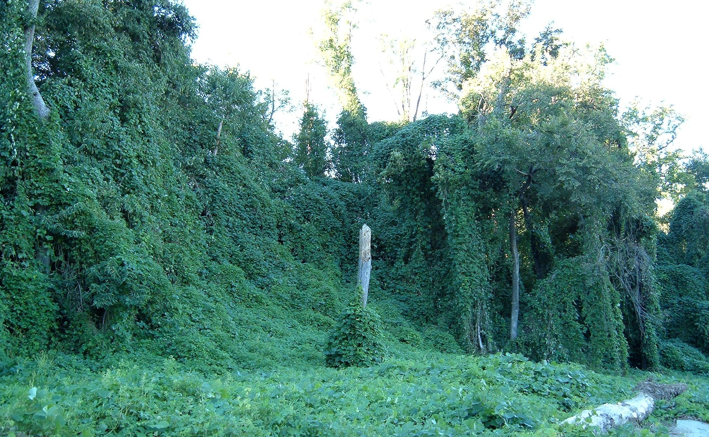
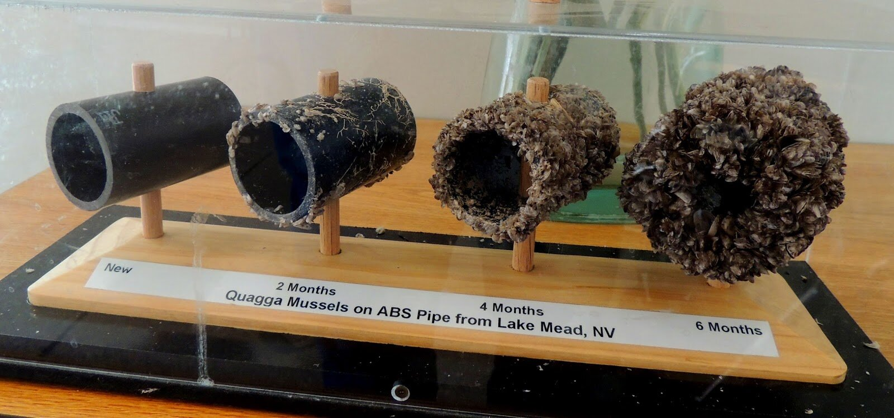
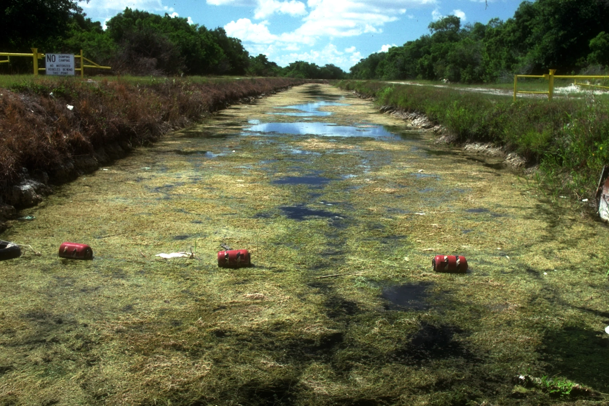
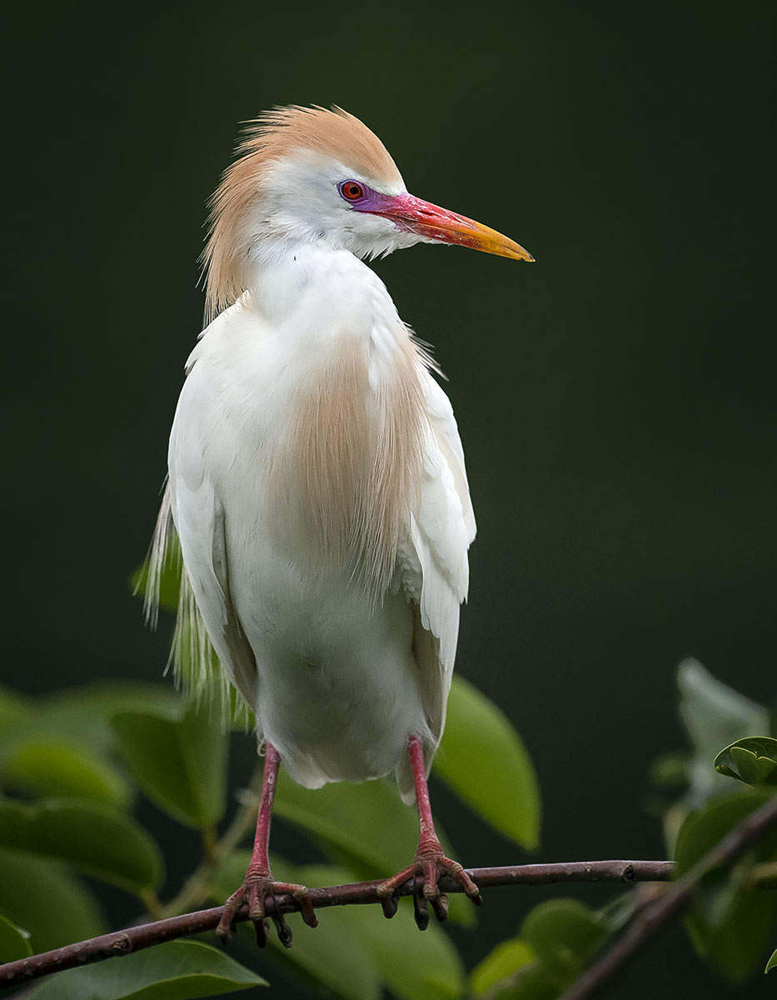
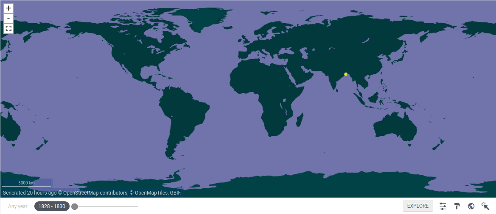
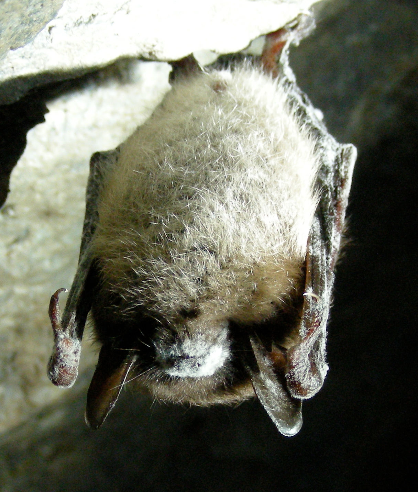
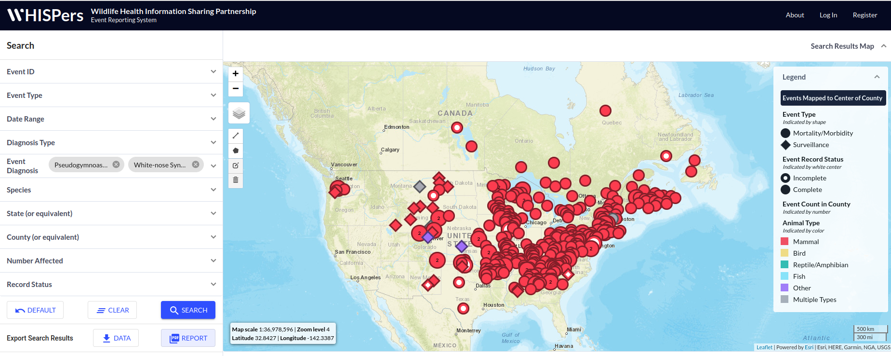
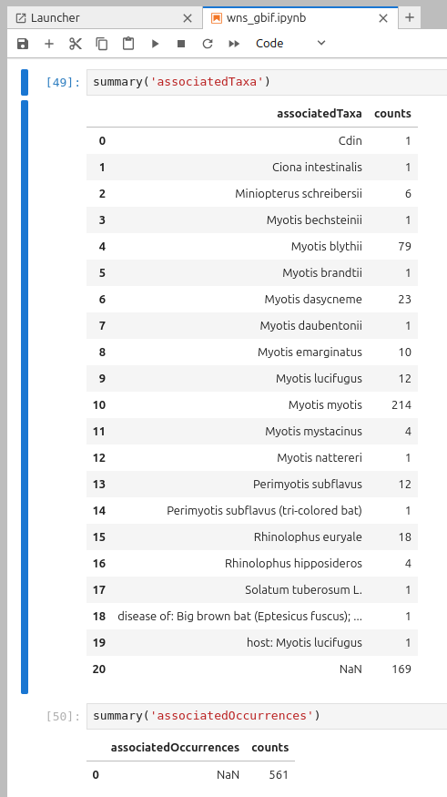
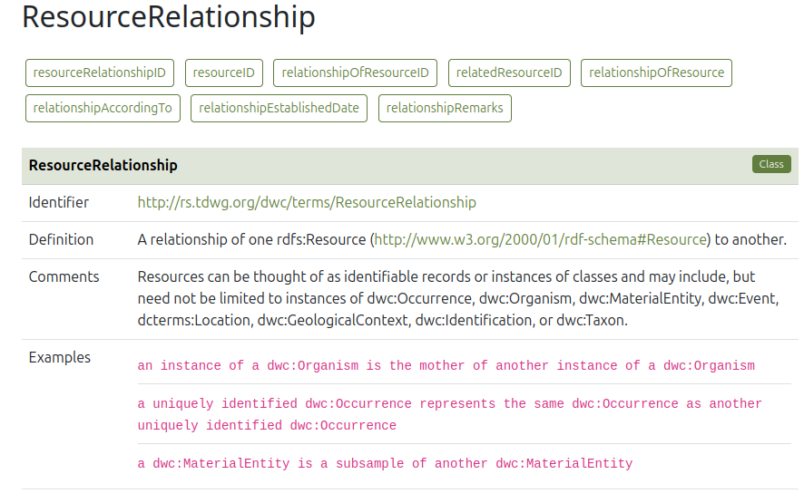
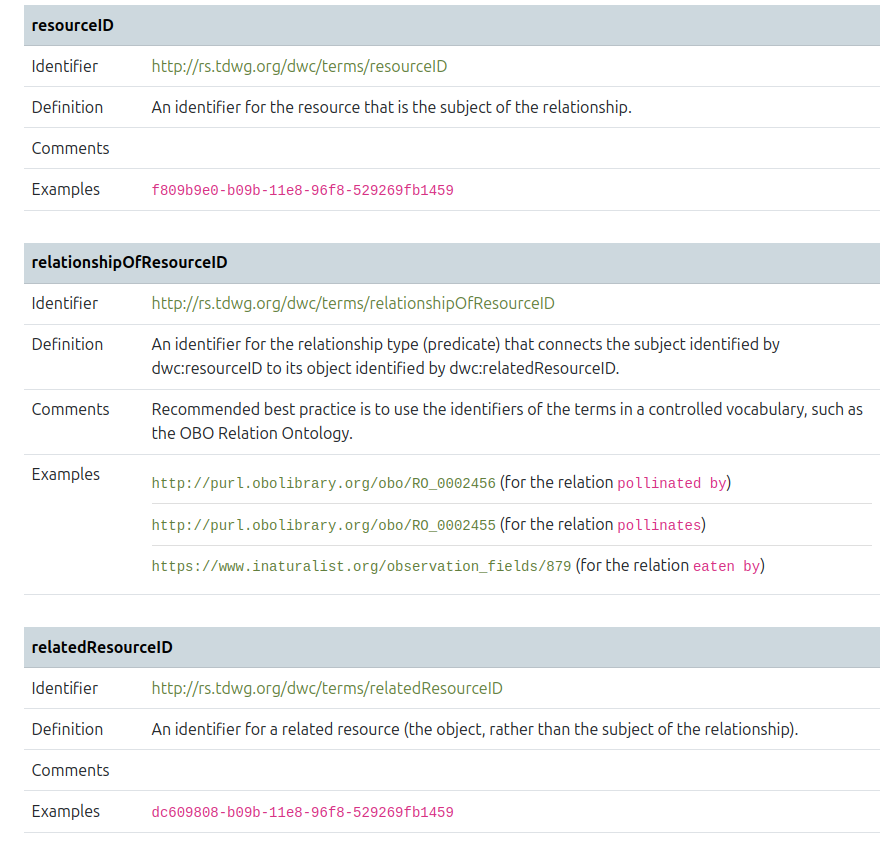

On the need for variables to represent organism interaction with the local environment
CScott Brown
Preliminaries: Invasive Species
Executive Order 13112
-
Alien
- ✓ An Occurrence record has a time, a place and a taxon.
-
Introduction causes or is likely to cause economic harm, environmental harm or harm to human health.
- I.e. a negative "impact"
Impact: Why do we care?

Credit: https://upload.wikimedia.org/wikipedia/commons/4/4c/Kudzu_on_trees_in_Atlanta%2C_Georgia.jpg
Impact: Why do we care?

Credit: https://www.flatheadlakers.org/invasive-mussels
Impact: Why do we care?

Credit: https://www.nepm.org/2023-08-17/an-invasive-plant-could-choke-out-aquatic-life-in-ct-river-state-feds-are-fighting-back
Impact: Why do we care?

Credit: https://www.cdc.gov/dpdx/angiostrongyliasis_can/modules/Angio_cant_LifeCycle_lg.jpg
Impact: Why do we care?
Measuring/predicting impact is a crucial part of IS management:
- Management costs $$$$
- Evidence of Impact brings the $$$$
Impact: Show me the $$$$
Example: Cattle Egret Bubulcus

Credit: Pedro Lastra, https://commons.wikimedia.org/wiki/File:Cattle_Egret_in_breeding_plumage,_Wakodahatchee_Wetlands.jpg
Impact: Show me the $$$$
Example: Cattle Egret Bubulcus
- Alien ✓

Credit: https://www.gbif.org/species/2480830
Impact: Show me the $$$$
Example: Cattle Egret Bubulcus
- Little or no funding for control in the contiguous 48 states
- "seem to have little or no impact" [1]
- No risk assessment from Fish and Wildlife [2]
- State and federal agencies control these in Hawaii because impact [3]
[1] Global Invasive Species Database, https://www.iucngisd.org/gisd/speciesname/Bubulcus+ibis
[2] Fish and Wildlife Service, https://www.fws.gov/library/categories/ecological-risk-screening
[3] Federal Register, Control Order for Introduced Migratory Bird Species in Hawaii, https://www.federalregister.gov/documents/2017/07/25/2017-15471/migratory-bird-permits-control-order-for-introduced-migratory-bird-species-in-hawaii
[2] Fish and Wildlife Service, https://www.fws.gov/library/categories/ecological-risk-screening
[3] Federal Register, Control Order for Introduced Migratory Bird Species in Hawaii, https://www.federalregister.gov/documents/2017/07/25/2017-15471/migratory-bird-permits-control-order-for-introduced-migratory-bird-species-in-hawaii
Impact: Show me the $$$$
Example: Hydrilla
Credit: https://www.nepm.org/2023-08-17/an-invasive-plant-could-choke-out-aquatic-life-in-ct-river-state-feds-are-fighting-back
Impact: Show me the $$$$
Example: Hydrilla
- Everyone and everyone is scrambling to control or prevent it [1]
- Florida alone spends $10M/year [2]
- Studies cast management as a bio-economic modeling problem: "A one-year increase in control yields... a net annual gain of $6.55 million" [3]
- Large negative Ecological, Economic and Hydrological impacts
[1] USDA Hydrilla Risk Assessment, https://www.aphis.usda.gov/sites/default/files/hydrilla-verticillata.pdf
[2] Hiatt, Drew, Kristina Serbesoff‐King, Deah Lieurance, Doria R. Gordon, and S. Luke Flory. “Allocation of Invasive Plant Management Expenditures for Conservation: Lessons from Florida, USA.” Conservation Science and Practice 1, no. 7 (July 2019): e51. https://doi.org/10.1111/csp2.51.
[3] Adams, Damian C., and Donna J. Lee. “Estimating the Value of Invasive Aquatic Plant Control: A Bioeconomic Analysis of 13 Public Lakes in Florida.” Journal of Agricultural and Applied Economics 39, no. s1 (October 2007): 97–109. https://doi.org/10.1017/S1074070800028972.
[2] Hiatt, Drew, Kristina Serbesoff‐King, Deah Lieurance, Doria R. Gordon, and S. Luke Flory. “Allocation of Invasive Plant Management Expenditures for Conservation: Lessons from Florida, USA.” Conservation Science and Practice 1, no. 7 (July 2019): e51. https://doi.org/10.1111/csp2.51.
[3] Adams, Damian C., and Donna J. Lee. “Estimating the Value of Invasive Aquatic Plant Control: A Bioeconomic Analysis of 13 Public Lakes in Florida.” Journal of Agricultural and Applied Economics 39, no. s1 (October 2007): 97–109. https://doi.org/10.1017/S1074070800028972.
Impact: Why DwC?
- Half of an invasive species impact datum is Biodiversity data
- The other half might be biodiversity data or it might be something else ¯\_(ツ)_/¯
- In what format will data producers share this data?
Impact: Why DwC?
- Half of an invasive species impact datum is biodiversity data
- The other half might be biodiversity data or it might be something else ¯\_(ツ)_/¯
- In what format will data producers share this data? Probably not DwCA...
Ecological Impact
Example: White-nose syndrome Pseudogymnoascus destructans

Credit: USFWS https://commons.wikimedia.org/wiki/File:Little_Brown_Bat_with_White_Nose_Syndrome_(Greeley_Mine,_cropped).jpg
Ecological Impact
Example: White-nose syndrome Pseudogymnoascus destructans
- Has reduced populations of multiple bat species in US by over 90% [1]
- Recent round of grants worth ~$1M [2]
[1] https://www.usgs.gov/news/national-news-release/white-nose-syndrome-killed-over-90-three-north-american-bat-species
[2] https://www.nfwf.org/programs/bats-future-fund
[2] https://www.nfwf.org/programs/bats-future-fund
Ecological Impact
Example: White-nose syndrome Pseudogymnoascus destructans

Credit: https://whispers.usgs.gov/home
Ecological Impact: DwC?
Example: White-nose syndrome Pseudogymnoascus destructans

Credit: GBIF.org (05 August 2024) GBIF Occurrence Download https://doi.org/10.15468/dl.fcyehr
Ecological Impact: DwC?
dwc:ResourceRelationship


https://dwc.tdwg.org/terms/#resourcerelationship
Ecological Impact: More Examples
- 1716 records of Burmese Python (Python bivittatus) stomach contents [1]
- Eastern Barred Owls (Strix varia) hybridizing with Northern Spotted Owls (Strix occidentalis caurina) [2]
- Hydrilla lowers oxygen content of affected water bodies [3]
[1] https://data.usgs.gov/datacatalog/data/USGS:630e7961d34e36012ef9f696
[2] https://www.fws.gov/project/barred-owl-management
[3] https://www.aphis.usda.gov/sites/default/files/hydrilla-verticillata.pdf
[2] https://www.fws.gov/project/barred-owl-management
[3] https://www.aphis.usda.gov/sites/default/files/hydrilla-verticillata.pdf
Geo/Hydrological Impact
Example: Hydrilla
Credit: https://www.nepm.org/2023-08-17/an-invasive-plant-could-choke-out-aquatic-life-in-ct-river-state-feds-are-fighting-back
Geo/Hydrological Impact
Example: Hydrilla
- Can dramatically reduce flow-rates in waterways [1]
-
How do we science this problem?
-
Document presence/absence of Hydrilla
- DwC ✓
-
Compare expected vs. actual measured flow rates
- This data is non-trivial
-
There exist data standards for Geological and Hydrological data!
- GeoSciML [2]
- MCH DBMS [3]
-
Document presence/absence of Hydrilla
[1] Jenner, Brittany. "Hydraulic consequences of invasive Hydrilla (submerged aquatic vegetation) in tidal channels: Implications for wetland maintenance." University of Maryland Undergraduate Thesis, College Park, Maryland (2010).
[2] http://geosciml.org/
[3] https://community.wmo.int/en/mch-meteorology-climatology-and-hydrology-database-management-system
[2] http://geosciml.org/
[3] https://community.wmo.int/en/mch-meteorology-climatology-and-hydrology-database-management-system
Geo/Hydrological Impact: DwC?
dwc:Hydrology?
Geo/Hydrological Impact: DwC?
dwc:Hydrology?
Geo/Hydrological Impact: DwC?
dwc:ResourceRelationship?
https://dwc.tdwg.org/terms/#resourcerelationship
Economic Impact
Example: Hydrilla
Credit: https://www.nepm.org/2023-08-17/an-invasive-plant-could-choke-out-aquatic-life-in-ct-river-state-feds-are-fighting-back
Economic Impact
Example: Hydrilla
- Impedes recreational use of water bodies [1]
-
How do we science this problem?
-
Document presence/absence of Hydrilla
- DwC ✓
-
Compare expected vs. actual use of water body for recreational fishing
- This data is non-trivial
-
There exist data standards for recreational fishing!
- NOAA Recreational Fishing Survey and Data Standards [2]
-
Document presence/absence of Hydrilla
[1] Adams, Damian C., and Donna J. Lee. “Estimating the Value of Invasive Aquatic Plant Control: A Bioeconomic Analysis of 13 Public Lakes in Florida.” Journal of Agricultural and Applied Economics 39, no. s1 (October 2007): 97–109. https://doi.org/10.1017/S1074070800028972.
[2] https://www.fisheries.noaa.gov/recreational-fishing-data/recreational-fishing-survey-and-data-standards
[2] https://www.fisheries.noaa.gov/recreational-fishing-data/recreational-fishing-survey-and-data-standards
Economic Impact: DwC?
dwc:RecreationalFishing?
Economic Impact: DwC?
dwc:RecreationalFishing?
Economic Impact: DwC?
dwc:ResourceRelationship?
https://dwc.tdwg.org/terms/#resourcerelationship
Proposal: Expand ResourceRelationship
- A URI to find the dataset containing the related resource
- A URI to find the data standard/format of the related resource
- (nice to have) More transparency and examples to steer users to ResourceRelationship class?
Conclusions
- Organisms do not live in a vacuum separate from their environment
- Interactions with and impact on the environment take on many, many forms
- DwC can access these many forms by simply providing a way to link the data together
-
The obvious pathway for this is using the `ResourceRelationship` class, but...
- it's not really up to the task as-is, but...
- it probably could be with pretty minor tweaking